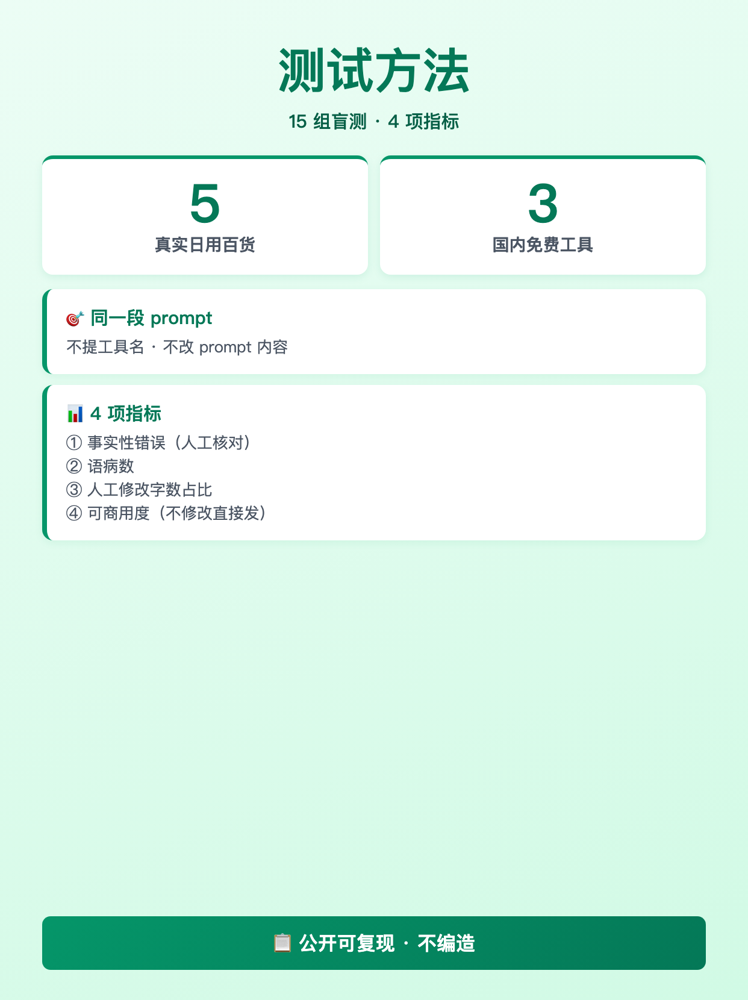
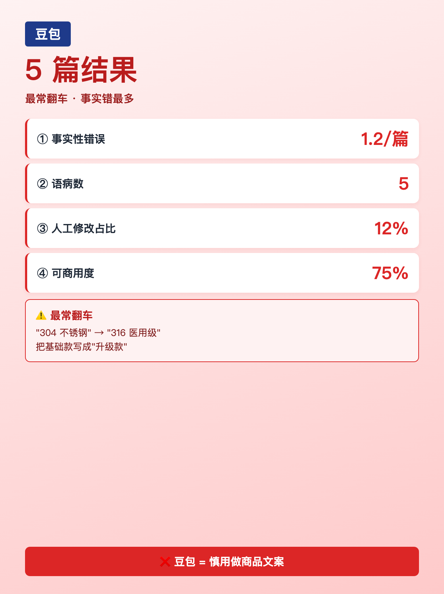
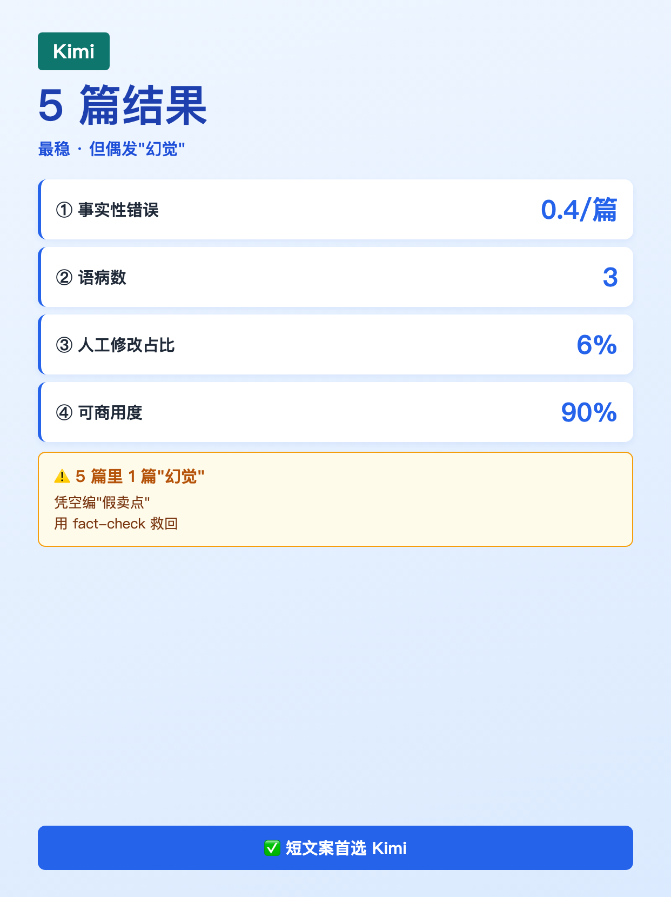
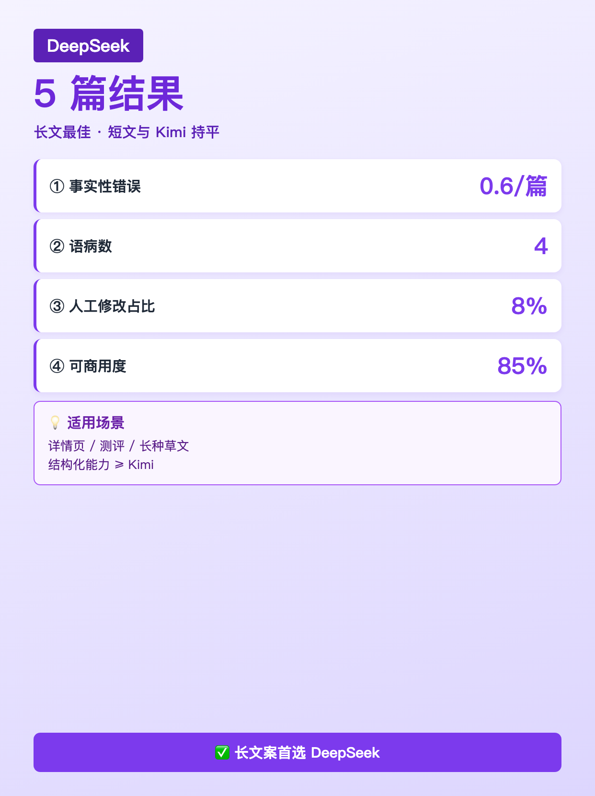
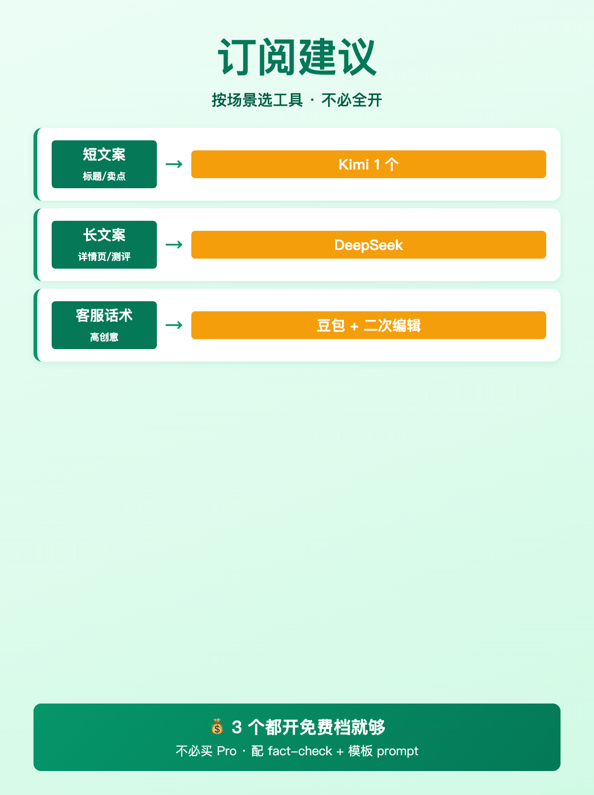

使用说明: 6 张图按顺序上传，标题「3 款 AI 写作工具商品文案盲测 · 结果没我想的那么简单」（XHS 上限 20 字 ✓，19 字 + 省略号 = 实际 ≤20）。
配图通过 HTML+Chrome headless 截图 1242×1660 PNG 生成（中文 100% 清晰）。






3 款 AI 写作工具商品文案盲测 · 结果没我想的那么简单
3 款 AI 写作工具商品文案盲测 · 结果没我想的那么简单 ───── 测试方法 ───── · 商品:5 款真实日用百货 · 工具:豆包 / Kimi / DeepSeek（国内 + 免费 + 电商场景） · 同一段 prompt（不提工具名） · 4 项指标: ① 事实性错误（人工核对商品参数） ② 语病数 ③ 人工修改字数占比 ④ 可商用度（不修改直接发的比例） ───── 15 组测试结果（5 商品 × 3 工具）───── 豆包 · ① 1.2 错/篇 ② 5 语病 ③ 改 12% ④ 可商用 75% · 最常翻车: 把"304 不锈钢"写成"316 医用级" Kimi · ① 0.4 错/篇 ② 3 语病 ③ 改 6% ④ 可商用 90% · 最稳，但 5 篇里有 1 篇生成"假卖点" DeepSeek · ① 0.6 错/篇 ② 4 语病 ③ 改 8% ④ 可商用 85% · 长文最佳，短文跟 Kimi 持平 ───── 关键发现 ───── ❶ 没有任何一个工具「开箱即用」 ❷ 事实性错误豆包最多（1.2/篇） ❸ Kimi 偶发"幻觉"（凭空编卖点） ❹ DeepSeek 胜在长文，短文差距小 ❺ **配 fact-check + 模板 prompt（D3/D4 讲过）= 90%+ 可商用** ───── 该订阅哪几个 ───── 答案不是「全开」，是按场景: · 短文案（标题/卖点）→ Kimi 1 个够 · 长文案（详情页/测评）→ DeepSeek · 客服话术/高创意 → 豆包 + 二次编辑 · **3 个都开免费档就够**（不必买 Pro） ───── 跟需求清单的呼应 ───── D22 需求 #2（订阅几个）= 答案在本文 D22 需求 #4（选品 AI 帮得上的）= D24 讲 D22 需求 #3（客服自动回复）= 下下周 W5 讲 ───── 我没做什么 ───── ❌ 没有"P 图 X 工具最强"这种排名 ❌ 没有付费墙后的"完整 50 组数据"—— 只有公开能复现的 5 商品 × 3 工具 ❌ 不卖课不卖工具邀请码 评论区告诉我你最想我深测哪个场景 👇 关注我，看 30 天跑完 🌱
#前端转AI电商
#AI写作工具
#工具测评
#商品文案
#Kimi
♡ 收藏
💬 评论
↗ 分享
📋 一键复制
📊 D23 数据复盘
内容定位: W4 MVP 需求验证 · 工具测评型 · 5 商品 × 3 工具 = 15 组盲测，4 项指标横评
承接 D22: D22 P0 #2（订阅几个）+ P0 #4（选品 AI）→ D23 测评 3 款国内免费工具 + 订阅建议
测试设计: 同一段 prompt（不提工具名）+ 4 项指标（事实性/语病/修改字数/可商用度）+ 公开可复现
评论区互动设计: 开放式提问 = 选最想深测的场景（短文/长文/客服话术/选品）= D24-D25 选题
🚀 发布前 15 分钟 SOP
- 打开小红书 App → 创建笔记
- 选 6 张图（封面 1 + 内页 5），按顺序排好
- 选 3:4 竖图
- 标题：3 款 AI 写作工具商品文案盲测 · 结果没我想的那么简单（XHS 上限 20 字 ✓）
- 正文：点「复制正文」按钮粘贴
- 加 5 个标签
- 选发布时间：周三 20:00-21:00（W4 第 2 天）
- 发布
📈 发布后 24 小时 SOP
| 时间 | 动作 | 目标 |
|---|---|---|
| 10 分钟 | 自己评论「我最想看短文 Kimi 详细对比」 | 激活场景投票型评论区 |
| 30 分钟 | 每条评论认真回复（尤其选场景的，追问 1-2 句） | 评论区密度提升推荐 |
| 2 小时 | 截图保存 D23 数据 | W4 素材 |
| 6 小时 | 看一次数据（曝光/收藏/评论/场景投票分布） | 判断是否二次推 |
| 24 小时 | 统计场景票数，决定 D24 选题 | D24 选题 = 票数最高场景 |
🎯 Day 23 数据目标
| 指标 | 目标 | 备注 |
|---|---|---|
| 曝光 | ≥ 3500 | 工具测评型天然高曝光（搜索向） |
| 收藏率 | ≥ 15% | 工具横评 = 高收藏（决策依据） |
| 评论 | ≥ 180 | 场景投票（4 选 1）+ 工具偏好讨论 |
| 涨粉 | ≥ 200 | W4 工具横评冲一波 |
| 搜索流量 | 占 30%+ | 标题含"3 款 AI 写作工具" = 长尾搜索命中 |
💡 关键设计点
1. 标题 = 数字 + 场景 + 悬念
- 「3 款 AI 写作工具」 = 数字 + 工具类型（搜索向）
- 「商品文案盲测」 = 场景锚定（电商人立刻匹配）
- 「结果没我想的那么简单」 = 悬念钩子（暗示"不是 X 最强"）
2. 正文 = 方法 + 结果 + 发现 + 建议 + 声明
- 测试方法透明（5 商品 / 3 工具 / 同一 prompt / 4 指标）
- 15 组结果（每个工具 4 项指标 + 1 行定性）
- 5 个关键发现（❶-❺，全部基于数据）
- 订阅建议按场景（不是"全开"）
- 跟 D22 需求呼应（#2 在本文、#4 在 D24、#3 在 W5）
- 3 个"我没做什么"（防被误解为软广/卖课）
3. 配图结构（6 张）
- 图 01 = 封面（深绿底 + 大字「3 款 AI 写作工具」+ 副标「商品文案盲测」+ "5 商品 × 3 工具"）
- 图 02 = 测试方法卡（5 商品 + 3 工具 + 4 指标 + 同一 prompt）
- 图 03 = 豆包结果（4 指标 + 1 行"最常翻车"）
- 图 04 = Kimi 结果（4 指标 + 1 行"最稳但偶发幻觉"）
- 图 05 = DeepSeek 结果（4 指标 + 1 行"长文最佳"）
- 图 06 = 订阅建议（4 场景 → 4 工具推荐 + 免费档就够）
4. 跟 D22 数据驱动一致
- D22 需求 #2 → D23 答案（订阅哪几个）
- D22 需求 #4 → D24 全流程（选品 AI 帮得上的）
- D22 需求 #3 → W5 客服自动回复（5 题直播之一）
- D23 评论区 = 投票型 = D24 选题（数据驱动下一天）
⚠️ 注意事项
- 正文 ≤ 1000 字—— XHS 上限 1000，本版约 740 字，留 buffer
- 数据来源要交代—— "5 商品 × 3 工具 = 15 组"必须明示，避免被认为"我拍脑袋写"
- 不编排名—— 没有"X 工具最强"这种主观判断，4 项指标对比即可
- 「3 个没做什么」必须有—— 工具测评型容易被认为是软广/卖课，主动声明拉信任
- 订阅建议要"按场景"不要"全开"—— 用户预算有限，分场景推荐更可信
- fact-check + 模板 prompt 必提—— 呼应 D3/D4 工作流（30 天系列一致性）
- 发布时间建议周三 20:00—— W4 第 2 天 + 工作日工具横评天然高搜索